Snow reports · US West
US West: The two-week picture in the US West, 17 November to 30 November, drawn from the two forecasts that reach two weeks, ECMWF and GFS. Middle of …
US West snow outlook to 30 November: 54 in at Kingvale, 53 in at Mt. Shasta Ski Park
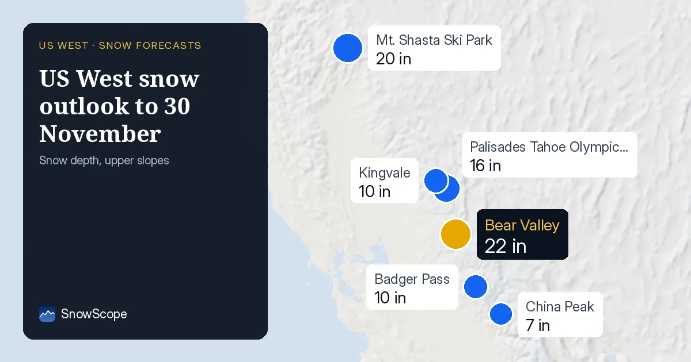
The two-week picture in the US West, 17 November to 30 November, drawn from the two forecasts that reach two weeks, ECMWF and GFS. Middle of the two on the maps, low and high of the two in the text: that is the rule of this daily series. The most goes to Kingvale: about 54 in (136 cm) on its upper slopes, 33 in (84 cm)–74 in (188 cm) depending on the forecast, then Mt. Shasta Ski Park with 53 in (134 cm). Every number here is an estimate with some uncertainty; the trend over several days is usually more reliable than one value.
Resort by resort, the next 14 days
Kingvale (United States): about 54 in (136 cm) in 14 days (33 in (84 cm)–74 in (188 cm) between the Forecasts), 36 in (92 cm) in the first week and 17 in (44 cm) in the second. Mark 19 November: that is the biggest day, with 16 in (40 cm), out of 7 days at 5 cm or more.
Mt. Shasta Ski Park (United States): about 53 in (134 cm) in 14 days (32 in (82 cm)–73 in (186 cm) between the Forecasts), 28 in (70 cm) in the first week and 25 in (64 cm) in the second. Mark 18 November: that is the biggest day, with 15 in (37 cm), out of 6 days at 5 cm or more.

Telluride's upper slopes hold the most snow of any big Colorado resort today. Christmas odds from 46 winters, and where the snow is best.
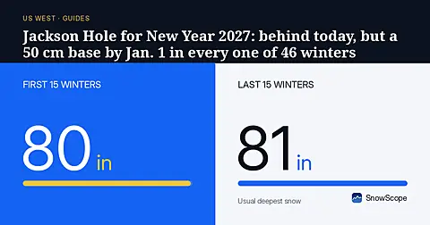
Jackson Hole has 18 in (45 cm) up top and 9 in (23 cm) on the way Saturday. What New Year's week usually looks like, and how to plan it.
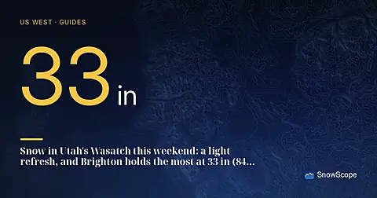
Little and Big Cottonwood canyons and Park City for Saturday 28 and Sunday 29 November: today's snow, the weekend top-up, and how this start compares with a normal year.

Mt. Hood shows how much a few hundred feet matter: today's snow at Timberline, Meadows, Skibowl and Mt. Bachelor, the next three days, and what December usually brings.

Crystal, Stevens, Snoqualmie, Mt. Baker and White Pass after this week's storm: today's snow, the next three days, and what a normal December brings to each pass.

Mt. Hood Meadows leads the US West with 84 cm on upper slopes. Up to 35 cm more arrives by Sunday. SnowScope, 27 Nov.


Western US and Canada snow forecast for the next 3 weeks from the 50-member ECMWF ensemble, NOAA GEFS and NASA MODIS: Whistler median 82 in (210 cm) by 8 December, Mammoth 21 in (53 cm), Alta 14 in (35 cm), Vail 14 in (34 cm). Lake Louise is the lean spot at 12 %.

Mt. Hood Meadows has 51 cm on upper slopes, well below the 73 cm average. Up to 66 cm new snow forecast by November 27 at Crystal Mountain.

Mt Baker sits at 28 cm on upper slopes, right where November typically sees snow at this height. Fresh powder is arriving this week, especially Thursday.

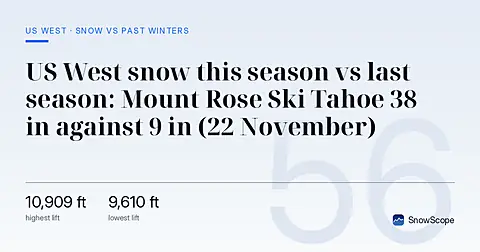
Mount Rose Ski Tahoe has 38 in (97 cm) on 22 November, more than four times last year's 9 in (23 cm). All four major resorts tracked show gains.

Mixed rain and snow at Hurricane Ridge through 25 November. Up to 24 in (61 cm) forecast near the top; rain falls below 4,528 ft (1,380 m). Data from 22 November.

Jackson Hole received 11 in (28 cm) of fresh snow in 72 hours. SnowScope shows 186 resorts with snow across the US West on 22 November.

The forecast shows up to 199 cm across the US West in the next two weeks, with the heaviest snow arriving in week one. Data from 21 November 2026.

Mt Baker will see 22 cm of new snow by November 24, but the freezing level rises above 1,000 m on November 22, bringing rain-on-snow risk to lower slopes.

Telluride holds 50 in (127 cm) on upper slopes as of 21 November. Brian Head Resort leads the US West with 54 in (138 cm).
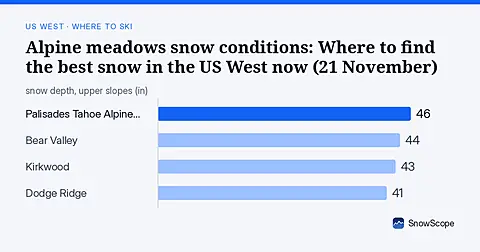
Kirkwood leads the US West with 109 cm on upper slopes as of 21 November. Early-season snow depth guide for skiers.

The National Weather Service expects 10 to 20 inches in the Wasatch from Thursday to Saturday. Where Utah's snowpack stands against past winters, why Utah snow is lighter, and when to ski.

What the measured snow gauges say about the North Lake Tahoe storm, why the first snow is heavy and wet, and how Sugar Bowl, Northstar and Diamond Peak compare with 46 winters.

About 28 inches of new snow at Mammoth and 26 inches at June Mountain on 18-19 November. What the storm is, how it ranks against past winters, and the best days to go.

Fresh snow keeps falling at Tahoe resorts this weekend. Upper slopes at Palisades Tahoe Alpine Meadows hold 107 cm (42 in) today, 19 November.

Seven independent ski areas in the West where an adult day ticket costs from $49 to $98.8 on weekdays, compared with the snow they usually have in December.

Heavenly, Sierra-at-Tahoe and Mt. Rose have more snow on 19 November than in any winter since 1980-81. How much fell, the measured gauges, the weather behind it and the best days to go.

Telluride leads the US West with 125 cm on upper slopes on 19 November. Snow spread across the region to 782,430 km².

China Peak will receive 33 in (83 cm) of snow by 21 November. Forecast issued 18 November for the US West.

Palisades Tahoe Alpine Meadows leads the US West with 30 in (75 cm) on upper slopes. Fresh snow and a strong forecast make it the weekend pick for 18 November.
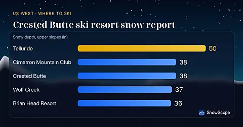
Crested Butte has 38 in (97 cm) on upper slopes on 18 November. Telluride leads the region with 50 in (126 cm). Snow covers 281,920 sq mi across the US West.

Fresh snow across the US West has built depths well above normal. At Palisades Tahoe Alpine Meadows, upper slopes hold 75 cm (measured 2026-11-18), compared to 10 cm typical for mid-November.


Beaver Mountain offers fixed-price tickets at $75 with no peak surcharge. Early December is often thin; aim for mid-month or later when snow is more reliable.

Bridger Bowl charges $86 online for 2026/27. Mid-mountain has 20 in (50 cm) on 15 December in half of winters; Christmas week odds improve to 78 %.

High Colorado ski area holds weekday lift ticket at $49 for 2026-27; mid-mountain snow reaches 26 in (66 cm) by mid-December in a typical winter. Data from 13 November 2026.

Sunlight near Glenwood Springs faces an early-season gamble in December. By mid-month you can expect 26 in (67 cm) at mid-mountain, though only 72% of winters reach that depth.

Timberline's mid-mountain has 52 in (132 cm) typical snow on 15 December. Upper slopes reach 58 in (147 cm). Full-day tickets start at $129 off-peak.

Seven US West ski areas offer weekday discounts in December. Ski Cooper saves $50 per day Monday-Friday, Mt. Baker $16.62 off-peak. Mid-mountain snow odds range from 70% to 93% by December 15.

For a December trip, is the Indy Pass worth $419? We checked seven member areas and their snow odds: the pass pays on the third area visited.

Lookout Pass midweek ticket costs $63 reserved ahead. By mid-December the upper mountain usually holds 30-37 in (75-95 cm). Data from 13 November 2026.

Local Missoula resort near 7,530 ft (2,296 m) with $78 weekday lift tickets. Mid and top slopes typically hold 30–37 in (76–93 cm) by mid-December. Data from 13 November 2026.

Schweitzer's 3-Pack gives three days for $249 on a ridge rising from 4,010 ft to 6,390 ft. Mid-mountain snow on 15 December averages 35 in (90 cm), with 85 % of winters above 20 in (50 cm).

Brighton leads in early December with 37 in (94 cm) typical snow on the 15th. Wolf Creek catches up by Christmas. Prices and reliability compared.

Brundage Mountain offers reliable early-season snow near McCall, Idaho. Typical mid-mountain depth reaches 30 in (77 cm) by mid-December, with tickets starting at $65 on select days.

Snow King sits at the base of Jackson. By mid-December, the mid-mountain usually holds 28 in (71 cm). Data as of 13 November 2026.

Loveland sells $60 online tickets through December 13, then $159 from December 14. Early December snow averages 20 in (50 cm) at mid-mountain, but the base is half as deep as mid-winter.

White Pass rewards early bookings on weekdays. By mid-December, mid-mountain holds 40 in (102 cm) in a typical year. Data from 13 November 2026.

Wolf Creek holds 34 in (87 cm) at mid-mountain on a typical 15 December. Peak prices start 20 December. Data: 13 November 2026.

Brighton's mid-mountain typically holds 37 in (94 cm) on 15 December. Data as of 13 November 2026.

16 US ski areas ranked by December 15 snow odds and adult day-ticket price. Grand Targhee leads at 100% odds; five areas combine over 80% odds with tickets under $80. Data from 13 November 2026.

Grand Targhee holds reliable December snow at all heights. At mid-mountain, 46 in (118 cm) is typical by mid-December, with 100% of winters reaching 20 in (50 cm) or more. Data from 13 November 2026.

Mt. Baker in December: 46 in (116 cm) of snow at mid-mountain on a typical 15 December, and a $98.80 Monday-to-Thursday ticket sold on the day only.

Snow above 1,500 m covers only 11% of the US West high ground. The snow line ranges from 2,000 m in the Cascades to 3,200 m in New Mexico, seen from space on 13 November 2026.

Mt. Shasta Ski Park's upper slopes hold 20 cm (2026-11-13), but the base is bare with rain below 2020 m. Next: 32 cm forecast.

Deer Valley ski conditions on 13 November 2026: no real snow on the ground yet, about 4 in near the top from the weekend storm, rain on the low East Village side below about 6,700 to 7,600 ft, and 11 in up top over the week.

The snow is not done yet: we expect 13 in (34 cm) at Bear Valley, 13 in (34 cm) at Dodge Ridge and 13 in (33 cm) at Badger Pass by 16 November. A …
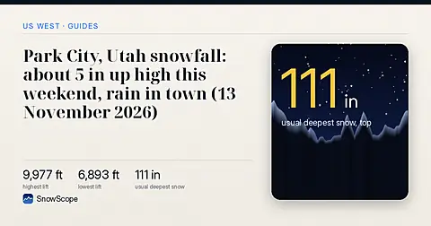
Park City, Utah snowfall forecast for 13 November 2026: almost no snow on the ground right now, about 5 in near the summit from the weekend storm with a snow level of 7,400 to 7,700 ft, rain at the base, and about 12 in up top over the week.

Alpental snow forecast for 13 November 2026: about 1 in on the upper mountain, rain almost to the summit this weekend with a snow level near 5,400 to 5,600 ft, then 4 to 5 in of mixed rain and snow up top next week.

Bogus Basin snow check for Boise skiers on 13 November 2026: no snow on the ground yet, rain and mixed snow this weekend with a snow level near 6,300 to 6,800 ft, then colder air and about 8 in at the summit by next week.

Telluride has 39 inches today. Peak snow weeks historically arrive in late December and March, not November.

Telluride's mid-slopes show 9 in (24 cm), running 92 percent of the seasonal average for mid-November. Saturday's system adds 5 in (13 cm) mostly above 10,000 ft.

Forecast from November 12: US West gets 11 in (27 cm) of new snow Saturday November 14; 56 resorts receive powder, busy week starts.
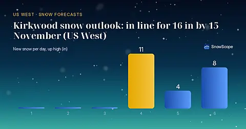
Kirkwood snow outlook: in line for 16 in by 15 November (US West). The next few days look decidedly unsettled in the US West, with the heaviest snow …

Cimarron Mountain Club, 39 in of snow: today's depth on the upper slopes (12 November). 42 in (106 cm): that is the snow on the upper slopes of …
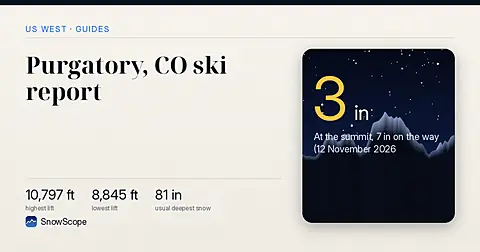
Purgatory's summit holds 3 in (7 cm) on 12 November 2026. Snow totals over the next week: 7 in (17 cm) at the top, 6 in (15 cm) mid-mountain, 4 in (10 cm) at base.

Freezing level climbs to 13,000 ft (3,960 m) at Aspen Snowmass, creating rain-on-snow risk as temperatures warm mid-November (forecast from 11 Nov data).

Mt.

Wolf Creek measured 20 in (51 cm) on November 11, 2026, tracking 115% of normal while vastly outpacing last year's thin early start.

Wolf Creek's base sits at only 3 in (8 cm) while its summit holds 19 in (47 cm) on 11 November, a 15 in (39 cm) gap shaped by freezing level.
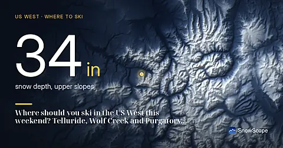
Where should you go skiing in the US West? Three inputs, one shortlist: today's snow depth, the new snow of the last 72 hours and the forecast point …

A storm on November 4 left 8 to 13 inches of new snow at five high Colorado stations near Aspen. Five days later, half of it was gone. What that means for powder days.

Wolf Creek leads with mid-slope snow at 361% of normal for November 10, well ahead of typical and signaling significant water storage in the mountains.

Seasonal outlook for the Rockies: warmer December ahead, near-normal snow, but north leans leaner while Colorado and Utah remain undecided. Data from 10 November 2026.

Vail in numbers: a usual peak of about 64 in (162 cm) at mid-mountain over 46 past winters, March the deepest month, plus terrain, access and safety.

Steamboat, Colorado, for families: what works for toddlers, school-age kids, teens and parents, with the snow of 46 past winters at three heights.

How to spend a first day at Park City Mountain, Utah, and when to go: our snow history gives about 71 in (180 cm) at the usual mid-mountain peak over 46 past winters.

Mt Baker, Washington: about 133 in (337 cm) at the usual peak at mid-mountain in 46 past winters, a world snowfall record, no lodging on the hill, and what that means.

Plan Mammoth Mountain by season: about 93 in (235 cm) at the usual peak at mid-mountain over 46 past winters, March deepest, long springs, and winters that swing.

Jackson Hole holds snow deep into spring on its high peaks. We checked six common beliefs against 46 winters of snow history. Data from November 2026.

Getting to Telluride in winter, airport by airport: Telluride Regional, Montrose, the drive on Highway 145 with the Colorado traction law, and the free gondola to Mountain Village.

Snowbird lies at the head of Little Cottonwood Canyon. We explain the traction law, road status, the ski bus, and why the drive matters for snow depth.
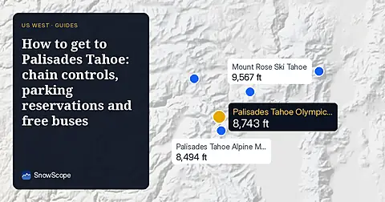
Palisades Tahoe Olympic Valley sits 42 miles from Reno. Winter access depends on chain controls, parking bookings and knowing the forecast. Data from 2026-11-08.

Big Sky, Montana, made easy to picture: 5,850 acres under Lone Peak, and snow that is about five times deeper near the top than at the base in 46 past winters.

Aspen Snowmass compared: Snowmass has about 75 in (190 cm) at the usual peak at mid-mountain over 46 past winters, Aspen Mountain about 69 in (174 cm). Terrain, access, safety.

Alta's mid-mountain usually peaks near 109 in (276 cm). Our 46-winter snow history answers when to come, which height suits you, and why the road matters. Data from 2026-11-07.

Aspen Snowmass at 5 centimetres, 23 percent of normal for mid-November. Freezing levels above 2,600 metres brought rain instead of snow across the US West on November 8.

Telluride holds 115 cm (45 in) on 8 November. The freezing level climbs to 4,280 m (14,042 ft) on 9 November, bringing rain-on-snow risk to the highest slopes.

Mt Baker's mid-slopes match the historical snow depth for this date, with fresh powder concentrated in the northern Cascades and Colorado high country.

Kendall Mountain has the deepest snow in the US West at 50 in (127 cm) upper slopes. Snow covers 74,363 sq mi across the region on 7 November.

Mt Baker: 8 in (21 cm) at the summit versus less than 1 in (2 cm) at the base. November forecast shows how this height gap will shift.

Mt Baker leads the US West with 19 in (47 cm) of upper snow, expecting 13 in (33 cm) through November 9. Model forecast from November 6.

On 6 November, 3 of 5 major resorts in the US West have snow deeper than the average for this date in the past 46 winters.

Mt Baker got 11 in (27 cm) of new snow in the last 72 hours, 4 in (11 cm) of it in the last 24 hours. It now has about 19 in (47 cm) on its upper …

Kendall Mountain holds 51 in (130 cm) on upper slopes. 145 of 195 US West resorts have snow on 5 November.

Mt Baker will receive 16.5 in (42 cm) of new snow through November 8, leading the US West, based on our model run on November 5.

Kendall Mountain now has 51 inches on upper slopes as of November 5, 2026. Snow peaks in late December and March—the best historical windows to visit.

Telluride got 12 in (31 cm) of new snow in the last 72 hours, 1 in (3 cm) of it in the last 24 hours. It now has about 46 in (118 cm) on its upper …

Kendall Mountain has 48 in (122 cm) on upper slopes. Telluride ranks second with 46 in (118 cm). SnowScope map shows 224,030 km² of snow cover on 4 November.

Rain will replace snow at Mt Baker on November 6, as the freezing level climbs to 8,957 ft (2,730 m), far above the ski area.

Silverton Mountain's 92 cm—deeper than all 46 past Novembers—arrived in just 72 hours; measured November 1st, 2026.

The most snow in the US West is at Kendall Mountain: about 53 in (134 cm) on the upper slopes. Next come Telluride with …

We combined today's snow depth, the new snow of the last 72 hours and the forecast to pick Silverton Mountain, Telluride and Lee's Ski Hill. Of these …